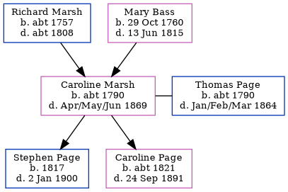

Caroline Page (née Marsh) c1790 - 1869
[ Home ] | [ Calendar ] | [ Surnames Index ] | [ Errors ] | [ Family History ]The child of Richard Marsh and Mary Bass, Caroline Marsh, the 3 times great-grandmother of Nigel Horne, was born in Elham, Kent, England c. 17901,2,3,4, was baptised there on 16 May 1790 and married Thomas Page (a labourer with whom she had 2 children: Stephen and Caroline Bromley) in Folkestone, Kent, England on 13 Jul 18115.
During her life, she was living at her birthplace in 18511; and in Swingfield Minnis, Kent, England on 7 Apr 18612.
She died in Apr/May/Jun 1869 in Elham3.
Parents
- Richard was born c. 1757
- Mary was born on 29 Oct 1760
Children
- Stephen was born in 1817
- Caroline Bromley was born c. 1821
Citations
- 1851 England Census Online publication - Provo, UT, USA: The Generations Network, Inc., 2005.Original data - Census Returns of England and Wales, 1851. Kew, Surrey, England: The National Archives of the UK (TNA): Public Record Office (PRO), 1851. Data imaged from the National
- 1861 England Census Online publication - Provo, UT, USA: The Generations Network, Inc., 2005.Original data - Census Returns of England and Wales, 1861. Kew, Surrey, England: The National Archives of the UK (TNA): Public Record Office (PRO), 1861. Data imaged from the National
- England & Wales, FreeBMD Death Index: 1837-1915 Online publication - Provo, UT, USA: The Generations Network, Inc., 2006.Original data - General Register Office. England and Wales Civil Registration Indexes. London, England: General Register Office. © Crown copyright. Published by permission of the Cont
- Kent, England, Tyler Index to Parish Registers, 1538-1874 Online publication - Provo, UT, USA: Ancestry.com Operations, Inc., 2010. This collection was indexed by Ancestry World Archives Project contributors.Original data - Frank Watt Tyler. The Tyler Collection. Canterbury, Kent, England: The Institute of Herald
- Familysearch.org (www.familysearch.org)
Family Tree
Map
Generated by ged2site. Last updated on Jul 3, 2024